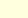

?דידקטיקה כמכלול - מהי
.ומשפיעה על עיצובה של התרבות האנושית
טכנולוגית המידע מתפתחת במהירות עצומה
עצמה לעידן זה, להורות את היתרונות הגלומים בהוראה
הכשרתכן להוראה צריכה להתאים
ולהקנות מיומנויות מתאימות. מערכות מתוקשבות
מתוקשבת, על מנת לשפר את דרכי ההוראה
.למידה, תנאי למידה ומצבים פדגוגיים גמישים ופתוחים
מאפשרות לתלמידים סביבות
התקשוב לסייע בארגון מידע, בבנית מיומנויות למידה
לתלמידים בעלי לקויות שונות בכוחו של
לתלמידיכן כלים אלו, עליכן להכיר אותם היטב. לכן
ותהליכי למידה. כדי שתוכלו להעניק
.מתוקשבת היא הבסיס להיותכן מורות טובות יותר
התנסות בלמידה בסביבה
למידה מתוקשבת: מידענות ותקשורת. בתחום המידענות
במסגרת הקורס נתנסה בשני תחומי
איתור ושימוש במידע קיים ובתכניות למידה בסביבה
,נתנסה בלמידת שיעורים מרחוק
.בתהליכי למידה בשימוש דואר אלקטרוני וקבוצות דיון
מתוקשבת. בתחום התקשורת נתנסה
,משום שלדעתנו מורה טובה אינה רק אשת מקצוע מעולה
"?ומדוע "הדידקטיקה כמכלול
ואת העצמה של הכלים הטכנולוגיים. מורה טובה חייבת
המכירה את חמרי הלמידה הקיימים
,להיות מודעת להבדלים בעמדות, בערכים, במידע ובידע
,לפתח מודעות ורגישות לעצמה ולאחרים
.ולהיות שותפה בשיח מתמיד בקהילות שונות
:בצוות קורס זה משתתפות רבות
. שרי בר-און - מדריכת הכתה המתוקשבת, וכותבת האתר
.מיכל דראל - מדריכה מחטיבת המחשבים
.ב': אסתי בהרב- מרגליות, עינת ברכה, דגנית הופנברטל
צוות הקורס בדידקטיקה שנה
.בקורס, ומסייעות בהתנסותכן בעיצובו המחודש
כל אחת ואחת מכן, המשתתפות
עובד כצוות חשיבה לתכנון יעיל. ניתן לפנות לכל אחת
,צוות הקורס, הכולל את חמש המדריכות
שונות והשתתפות בהצלחות ובקשיים. נשתדל להענות לכן
מאיתנו לצורך יעוץ, העלאת הצעות
.בהקדם
תכנית הקורס
כמכלול - תכניות לימודים ודרכי הוראה
שם הקורס: דידקטיקה
'המקצוע: דידקטיקה לשנה ב
המסלול לחינוך מיוחד
פעילות מתוקשבת, תרגילים, סדנאות וסיורים
,אופי הקורס: שיעור
'ש"ש: 4 ש"ש בסמסטר א', 2 ש"ש בסמסטר ב
הרציונל לקורס
.שישמש את הסטודנט/ית בהכשרה המעשית
,בשנה ב' מכוונים ליצירת בסיס תיאורטי והתנסותי
לימודי הדידקטיקה
:בלימודי הדידקטיקה מודגשים שלושה מוקדים
תכניות הלימודים
,נבון/ה של תכניות לימודים, תוך הכרת הסילבוסים
פיתוח אישיות המורה כצרכן/ית |
|
.בחינוך המיוחד
בבחירת דרכי ההוראה המתאימות לאוכלוסית התלמידים
פיתוח שיקולי דעת מושכלים |
|
|
,התפתחות קוגניטיבית)
על ידי לימוד הנושאים התיאורטיים וההתפתחותיים
זיקה בין מוקדים אלו נוצרת
חשיבה ולמידה). הנושאים, הנלמדים בשיעורי
משקמת, התפתחות מוסרית וסוגיות ערכיות, איסטרטגיות
הוראה
,ההכשרה המעשית, ולהתאמת תכנית לימודים
יוצרים בסיס להערכת מצבם של התלמידים במסגרת
,הדידקטיקה
.ודרכי הוראה על פי צרכיהם והשונות ביניהם
חמרי למידה
למידה סדנאית יישומית ויישום הלמידה בתנאי
,הלמידה מתבצע בשלושה רבדים: למידת נושאים עיונית
תהליך
למידה מתוקשבת ולמידה תצפיתית (Modelling). חלק
השדה. ההוראה תתבצע במגוון דרכי הוראה, תוך דגש על
תקשורתיות ורפלקטיביות הנוגעות להתנסות
בלמידה נעשה בעבודה קבוצתית בה תודגשנה מיומנויות
חשוב
.בהוראה
גילאים שונים, מסגרות משלבות מסוגים
:מתמקדים באוכלוסיית לקויי הלמידה במסגרות השונות
נושאי ההוראה
.וילדים בעלי צרכים מיוחדים בכתה הרגילה
שונים, לקויי למידה בעלי קשיים נוספים
מטרות הקורס
.תכניות לימודים
הערכה לגבי השיקולים בקביעת מטרות החינוך ובתכנון
הסטודנטים יבינו ויפתחו יכולת |
|
של המקצועות
ברמות שונות בהתאם לאוכלוסית התלמידים ולסילבוסים
הסטודנטים יבינו וינסחו מטרות |
|
.תלמידים שונות
הלמידה השונים ויתנסו בעריכתם והתאמתם לאוכלוסיות
הסטודנטים יכירו את חמרי |
|
.דרכי הוראה שונות
הסטודנטים יכירו השקפות עולם שבהן מעוגנות |
|
.והשיקולים לבחירתם
יכירו, יתנסו, ויעריכו דרכי הוראה ולמידה פעילה
הסטודנטים |
|
.סביבה מתוקשבת בהוראה
ועקרונות פדגוגיים הנדרשים לעבודה בשילוב
הסטודנטים ירכשו מיומנויות |
|
.מקצועית בהתנסות בשדה
הסטודנטים יזהו תהליכים של צמיחה |
מבנה הקורס
:בדרכי הוראה שונות
הקורס ילמד
בקבוצות ותרגילים שונים
שיעור כיתתי במתכונת של הרצאות, דיונים, עבודה |
|
ובמרכזים השונים במכללה
במתכונת של עבודה עצמית וקבוצתית, במסלול לחנ"מ
שיעור סדנאי |
|
.בקבוצות דיון אלקטרוניות
במעבדת מחשבית, למידה עצמית מרחוק, השתתפות פעילה
סדנא |
|
במוסדות חינוך והדרכה
סיורים וטיול משולב |
דרישות הקורס
,החינוך, בימי עיון והרצאות אורח, בסיורים
פעילה בשיעורים, בפעילות מתוקשבת, בפעילות במוסדות
השתתפות
.בטיולים משולבים ובארועי המכללה
.קריאת ביבליוגרפיה במועדה
.במועדן בנושאים תיאורטיים ומעשיים
הגשת תרגילים ומשימות
.חקירה וכתיבה של נושא אישי והצגתו
.כתיבת מבחן מסכם
שקלול הציון השנתי
אחוז - מבחן שנתי 60
אחוז- נושא אישי 30
אחוז - תרגילים ומטלות 10
Visitor No. -
Sari Bar-On 1999 - All right reserved